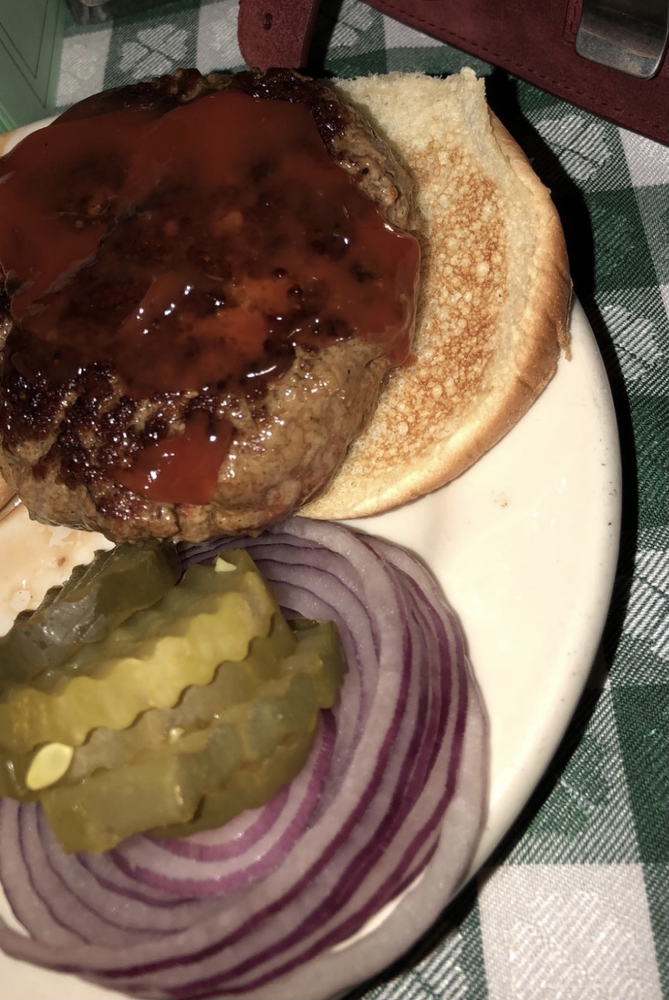

JG Melon is by far one of the best burgers in New York City. It is a New York institution that has been serving a local and international crowd since 1972. Their committment to the J.G Melon tradition and their famously juicy hamburgers and cottage fries is why they are one of the best restaurants in New York City. For more information visit: www.jgmelon-nyc.com
Hillstone serves classic American cuisine, provides a warm modern space that features striking artwork and extraordinary service in a casual setting. The menu has hearty comfort food with a Southwest flair. One of the best and most famous items on the menu is Hillstone's original spinach and artichoke dip. For more information visit: www.hillstonerestaurant.com